Creating Project Angular
In this session we will create the angular project and explain about your struct.
To create the angular project, we will use Visual Studio Code, but you don't need this tool specifically to do this. Here is the link to download the visual studio code if you choose to use
You will need to install node.js to work with the angular, to download it you can find it here
Everything ready to start let's open our chosen code editor in the case of visual studio and let's open it in our project directory
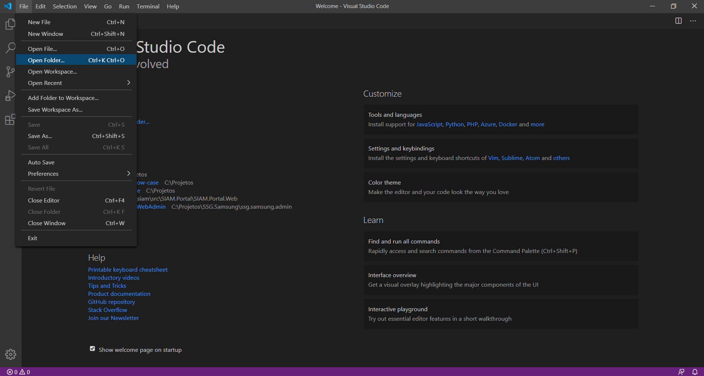
Now let's open our terminal, where we will insert the angular's command lines to work generating our project and among other angular operations.
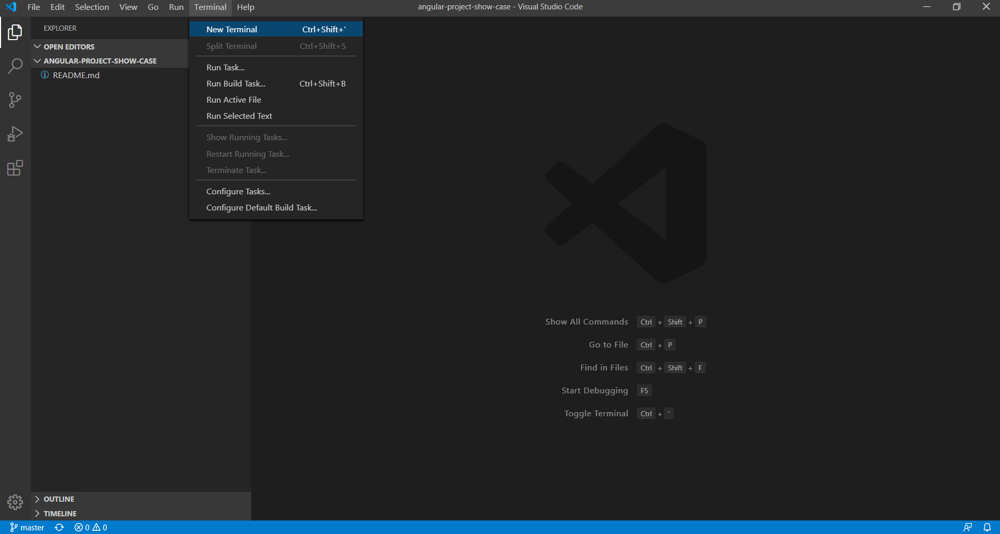
At the terminal we will type the command 'npm install -g @ angular / cli' to install the angular cli and press enter
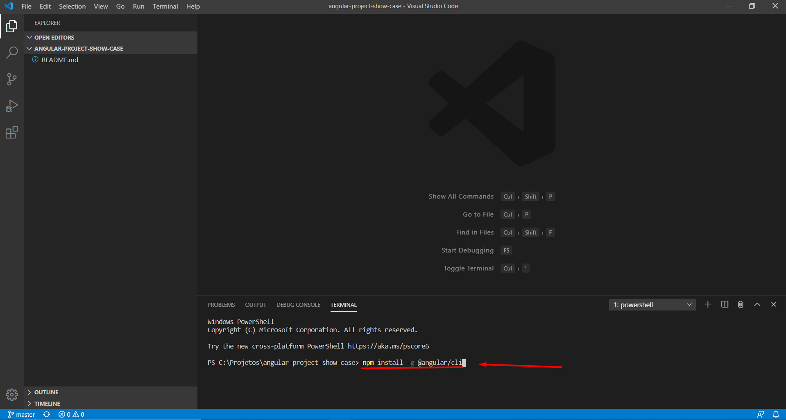
Wait a few moments until the installation is finished at the terminal and then enter the following command to create the angular project 'ng new project-name' and press enter again, a question will appear on your console, asking for permission to create the route file, in this example we will answer that yes this will facilitate starting with our created route file we will talk about it later. To do so, simply answer as shown in the image below.
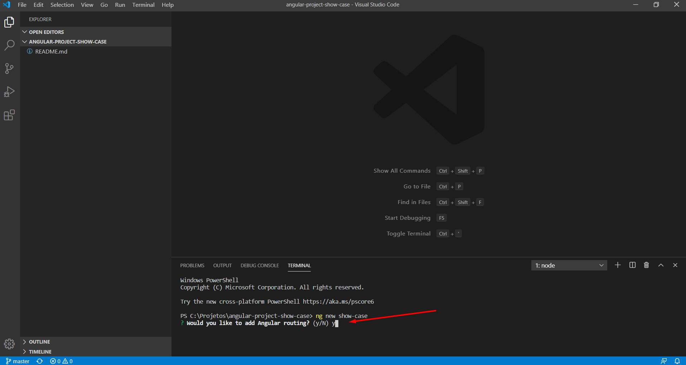
In the sequence, he will ask which style sheet he intends to use in the project for him to create initially, with the arrow on the keyboard up and down you select the one of your preference.
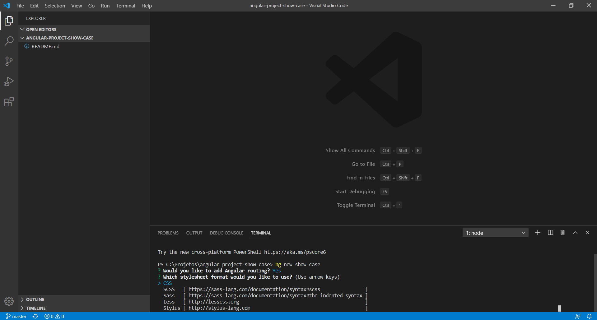
The project will be created, wait a few moments for completion and open your project directory according to the name using the command 'cd show-case' from the console. Once your project is created, now we will understand its file-by-file structure in a basic way so that you have full capacity to follow with an angular project.
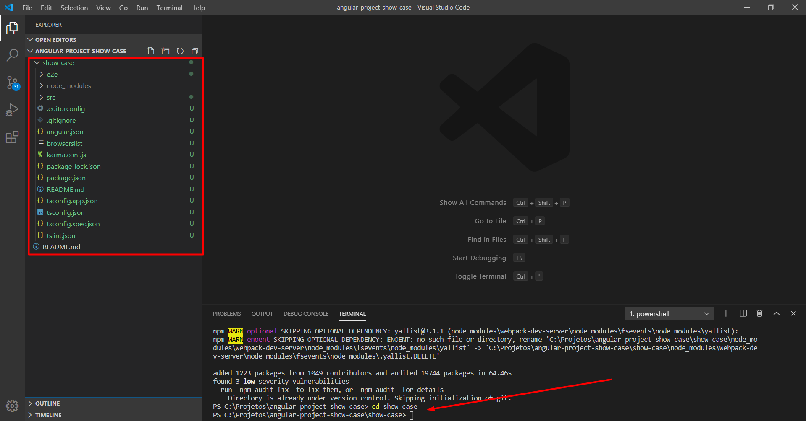
Understanding the project structure
e2e: End to end testing (E2E) or also known as integration testing is a great way to make sure at a high-level overview that our applications function correctly. Commonly we use E2E tests to help ensure our components are working correctly together to create an entirely functioning feature cohesively. E2E tests are not Unit tests. Unit tests should test a small isolated piece of code while the E2E test is a high-level test of a feature or several interactions. E2E tests are also ideal for making sure critical line of business features such as checkouts and sign-ups are well tested. I won’t dig into all the details of Unit tests vs. E2E tests but focus on how integration and E2E tests work in Angular.
node_modules: node_modules is the directory you should never upload to your versioning system. It is very large and heavy and it is totally unnecessary to put it in your repository because whenever a developer has downloaded his project he will use the command 'npm i' and behind the package.json configuration file that directory will be downloaded according to the your project's needs. In node_modules you have all the librarys that will be used throughout your project as well as the angular itself, for this reason NEVER change anything in that directory.
src: src is the root directory of your application let's talk in detail about each file inside it below
.editorconfig: Configuration file of your visual studio, responsible for configuring formats etc.
.gitignore: Git configuration file created automatically by the angular cli. By default, it already ignores some project files that are unnecessary for its repository such as node_modules.
angular.json: Angular project configuration file. It is not recommended for those who are starting to touch this file. By default it already has everything configured but it is important to know as shown in the image below it is possible to add style sheets, scripts and assets in general where they were used in the application has these directory settings. In scripts you will add external scripts that will be loaded automatically and read throughout the application. In styles by default it starts with styles.css which is the global css
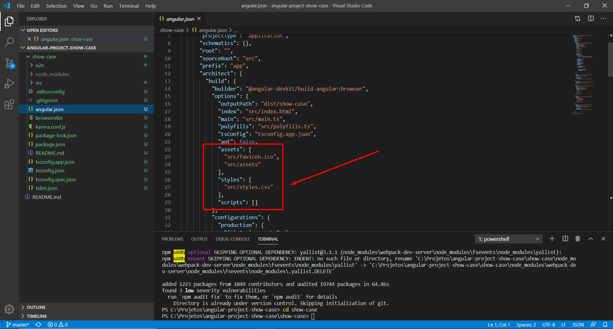
browserslist: The browserlist is a config file in which you can define your target browsers. It is not something Angular-specific but a standard across many frontend related tools. Angular uses it in it's build process to decide if differential loading should be used. Basically Angular is able to create a application bundle for modern browsers, which is using new features and can be smaller and more performant, as well as an application bundle for older browsers which don't support the new features and need polyfills to work properly. With browserlist you can tell Angular which broqsers your application will run on and Angular can then decide which bundles to create based on that
karma.conf.js: Karma is the foundation of our testing workflow. It brings together our other testing tools to define the framework we want to use, the environment to test under, the specific actions we want to perform, etc. In order to do this Karma relies on a configuration file named by default karma.conf.js.
package-lock.json: The purpose of the package-lock is to avoid the situation described above, where installing modules from the same package.json results in two different installs. Package-lock.json was added in npm version 5.x.x, so if you are using major version 5 or higher, you will see it generated unless you disabled it.
package.json: File responsible for storing all the dependencies of your project
readme.md: File automatically generated by the angular CLI in which it will be displayed in your repository for the project's informational purposes
tsconfig: The remaining 3 tsconfig files are typescript and node configuration files. You will rarely need to touch it and if you are going to touch it very carefully consult the angular api to do it carefully.
Now let's talk about the src directory
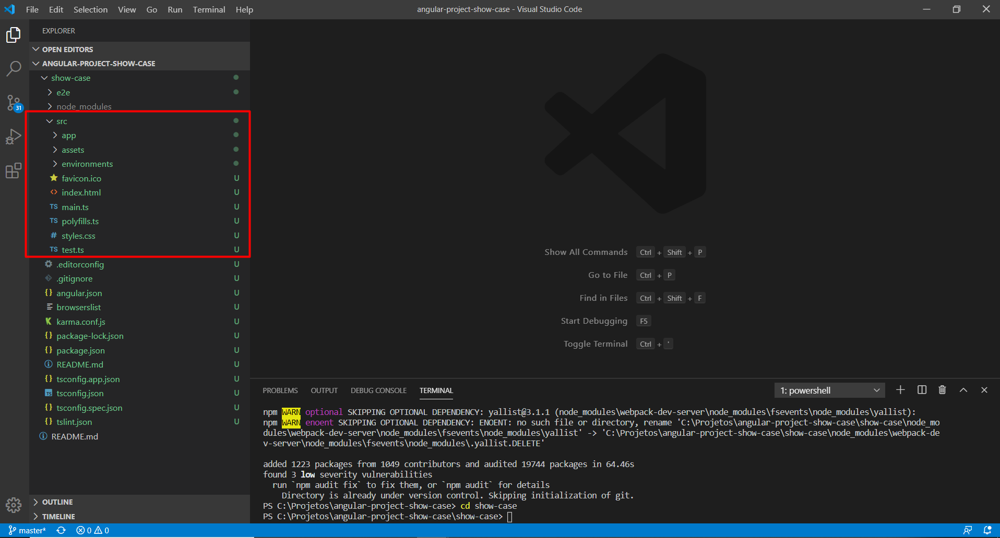
app: It is the directory responsible for the files that actually gave life to your application, this is where the game begins, we will talk about in the sequence
assets: Root directory of the application assets which, as we saw earlier, is configured in angular.json
environments: In this directory there are 2 files: environment.prod.ts and environment.ts. Both are files with constants that must be used throughout your project in different situations and different environments. For example, there we can configure the production url and homologation url and when executing the project in its respective environment the angular will get the correct URL, so you use this constant throughout your application without having to change it everywhere whenever you need to change environment.
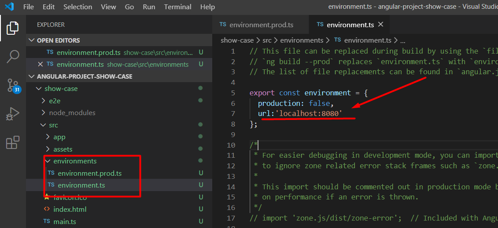
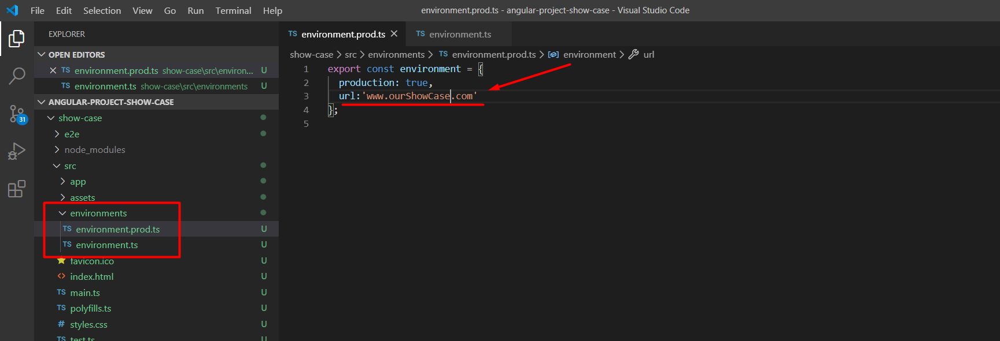
Attention! Because it is a constant and an object, you can add as many attributes as you need and the type you find necessary!
Favicon.ico: Standard application favicon file. Just replace with the favicon you want.
index.html: Main html file of the application, root file where everything starts. Inside the body tag there is an app-root tag, this is the angle tag where you will render your entire application. You shouldn't touch this tag. The rest is standard html where you can add meta tags etc, according to your need. The 'base' tag should also not be tampered with at this point, when the project is published to an environment in which the root domain will be configured. We will see this in the project's publishing session.
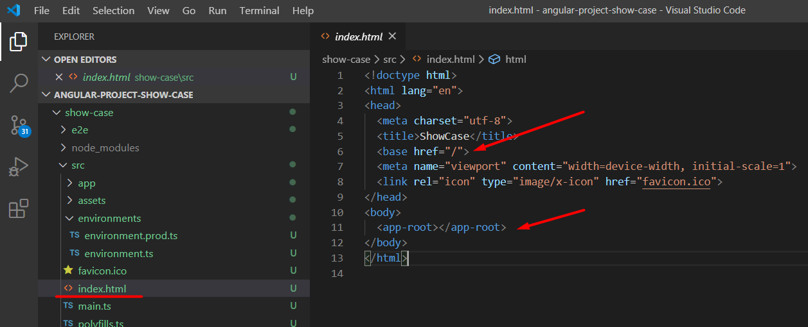
main.ts: Angular is a framework that works in a modular way, it is in this main.ts file that the main application module is started. Avoid messing with this file, you will most likely not need to change anything here. Any changes made incorrectly here will cause your application to stop working properly.
polyfills.ts: This file includes polyfills needed by Angular and is loaded before the app. ou can add your own extra polyfills to this file
styles.css: As we saw earlier this file is imported into angular.json as the global css file. You can add global styles to this file, and also import other style files.
test.ts: File responsible for running application tests.
And finally let's talk about the 'APP' directory
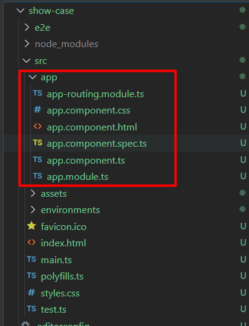
The angular as previously said it works in a modular and componentized way. You can create components to use in any part of the application but for that component to have life within the application it needs to be inserted inside a module. You can have several different modules, we will see all this in practice throughout the training. This first structure created is the root module in which the initial files with 'app.' You should avoid messing with the nomemclature of these files, as any changes here impact the overall functioning of the application.
app-routing.module.ts: Configuration file for module routes. Within the matrix declared as a constant called Routes is where we will insert our routes. We will see this in practice in another session
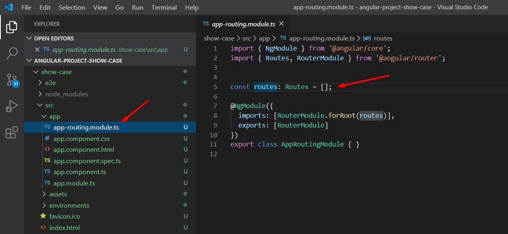
app.component.css: File where styling specifically for the component in question will be implemented. In this case the 'App'
app.component.html: File responsible for implementing the html that will be displayed by the component. In the html we can reflect all and any result processing done by the App.Component through variables displayed through the notation {{}} as well as we can also use other components and functionalities applied to the html tags. We will see in detail in the next sessions
app.component.spec.ts: File responsible for the implementation of unit tests applied to the component in question.
app.component.ts: File responsible for implementing events, creating variables, etc. The logic behind the component is responsible for bringing the component and HTML to life. We will see in detail below how the file works.
app.module.ts: In the App.module we will import all the modules of the systems and their respective components and also providers and external libraries that for reasons of specific and situational need of your project should be imported globally. We will also see in sequence that it works in practice.
Now finally, are we going to test our application? The angular by default already creates this structure and you can test if everything went well, let's run the command ng serves on the console and wait for the application to start. After processing you must put the address that will be displayed on the console in your browser to test and see your application running. By default it is http: // localhost: 4200 /. The angular has a very interesting mechanism that you can change your code without stopping the execution and it already updates automatically for you to save the exception of when you insert a new library in the application, in which case you need to stop and run the project again. To stop the project, press ctrl c in the case of windows or command c in IOS.
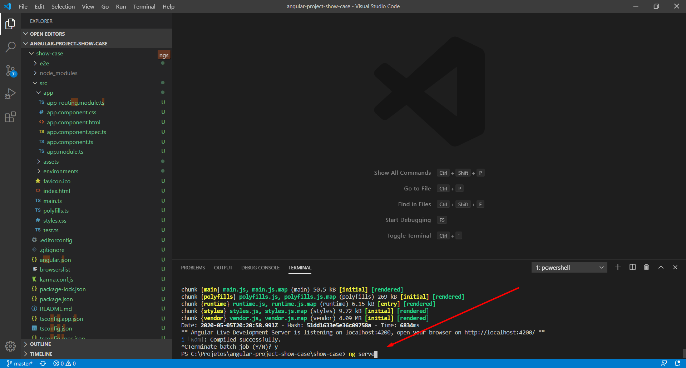
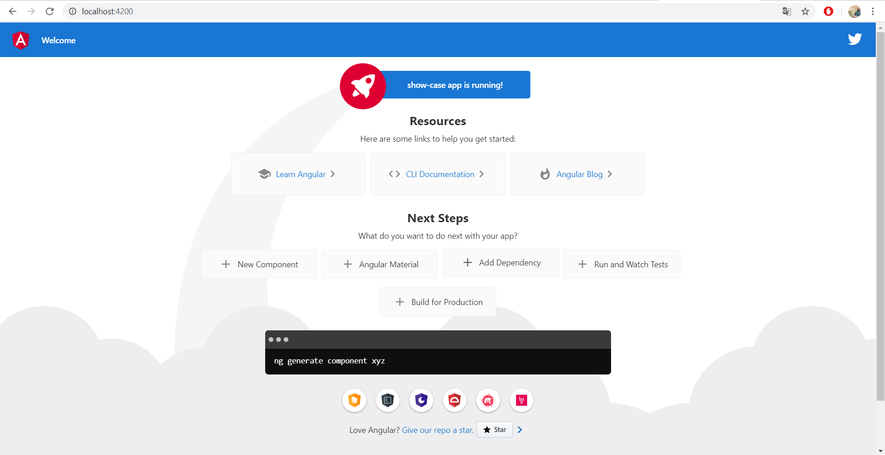
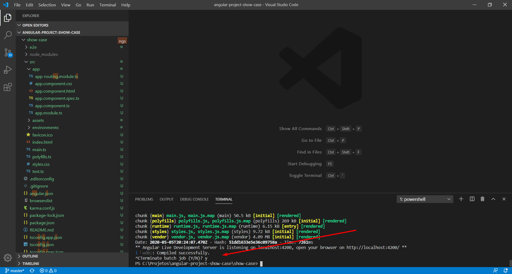
The project created during the training will be available here on my github! here